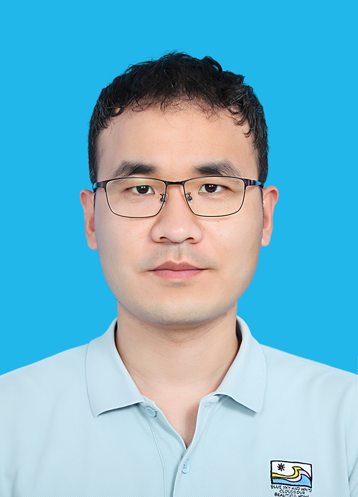

Feng Xie
|
 |

Biography
I am currently an associate professor in the Department of Applied Statistics at Beijing Technology and Business University. Before joining BTBU, I did postdoctoral research in the Department of Probability and Statistics at Peking University from 2020 to 2022, working with Prof Zhi Geng and Prof Yangbo He. I obtained my PhD in the School of Computer Science at Guangdong University of Technology (2017 - 2020), supervised by Prof Ruichu Cai and co-supervised by Prof Kun Zhang (Carnegie Mellon University). I got my Master’s degree in the School of Mathematics and Statistics at Guangdong University of Technology (2014 - 2017), supervised by Prof Zhifeng Hao. From 2019 - 2020, I was a visiting Ph.D. student in the Department of Philosophy, Carnegie Mellon University.
My Research Interests Include:
Causal discovery
Latent variable model, Causal factor analysis
Causal representation learning
Instrumental variable model
I'm looking for students. Welcome to contact me if you are interested!
Selected Publications
Latent Causal Structure/Causal Factor Analysis/Causal Representation LearningFeng Xie, Yan Zeng, Zhengming Chen, Yangbo He, Zhi Geng, and Kun Zhang. Causal Discovery of 1-Factor Measurement Models in Linear Latent Variable Models with Arbitrary Noise Distributions. Neurocomputing, 2023.
- Shengyu Zhang, Fuli Feng, Kun Kuang*, Wenqiao Zhang, Zhou Zhao, Hongxia Yang, Tat-Seng Chua, Fei Wu. Personalized Latent Structure Learning for Recommendation, TPAMI, 2023.
- Zheqi Lv, Wenqiao Zhang, Shengyu Zhang, Kun Kuang*, Feng Wang, Yongwei Wang, Zhengyu Chen, Tao Shen, Hongxia Yang, Beng Chin Ooi and Fei Wu. DUET: A Tuning-Free Device-Cloud Collaborative Parameters Generation Framework for Efficient Device Model Generalization, The WebConf, 2023.
- Dingyuan Zhu, Daixin Wang, Zhiqiang Zhang, Kun Kuang, Yan Zhang, Yulin Kang and Jun Zhou. Graph Neural Network with Two Uplift Estimators for Label-Scarcity Individual Uplift Modeling, The WebConf, 2023.
- Fengda Zhang, Kun Kuang*, Long Chen, Yuxuan Liu, Chao Wu, Jun Xiao. Fairness-aware Contrastive Learning with Partially Annotated Sensitive Attributes, ICLR, 2023.
- Anpeng Wu, Kun Kuang*, Ruoxuan Xiong, Minqin Zhu, Yuxuan Liu, Bo Li, Furui Liu, Zhihua Wang, Fei Wu. Learning Instrumental Variable from Data Fusion for Treatment Effect Estimation, AAAI, 2023.
- Qi Tian, Kun Kuang*, Furui Liu, Baoxiang Wang. Learning From Good Trajectories in Offline Multi-Agent Reinforcement Learning, AAAI, 2023.
- Yingjie Jiang, Ying Wei, Fei Wu, Zhengxing Huang, Kun Kuang, Zhihua Wang. Learning Chemical Rules of Retrosynthesis with Pre-training, AAAI, 2023.
Academic Service
Userful Links